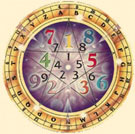

La numerología es una ciencia esotérica que trabaja sobre conocimientos que
establecen una relación mística entre los números y los seres vivos junto
con las fuerzas físicas. Fue popular entre los primeros matemáticos, pero
no se la considera ya disciplina matemática. En numerología, se dice que
los números son uno de los conceptos humanos más perfectos y elevados.
Según los que la practican, la numerología es la disciplina que investiga
la vibración secreta de ese código y enseña a utilizar los números en
nuestro beneficio, por medio del estudio de su influencia sobre personas,
animales, cosas y eventos.
En el año 530 AC, Pitágoras, filósofo griego, desarrolló en forma metódica
una relación entre los planetas y su vibración numérica. Le denominó "la
música de las esferas”. Mediante su método de numerología descubrió que las
palabras tienen un sonido que vibra en consonancia con la frecuencia de los
números como una faceta más de la armonía del universo y las leyes de la
naturaleza.Pitágoras dijo: "El mundo está construido sobre el poder de los
números".
La Numerología Esotérica es el arte y la ciencia de comprender la
significación espiritual de toda manifestación. La importancia de la
Numerología radica en el valor cuantitativo del número. A cada número se le
asocia un concepto arquetípico de nuestros valores terrenales. En
numerología no existen números mejores que otros, todos tienen una
finalidad y una importancia en algún momento de nuestras vidas, o bien
definen una situación o una circunstancia tanto feliz como penosa pero
también definen la actitud en consecuencia. Los caminos son muchos, la vía
adecuada no siempre hay tantas.
Pitágoras ensañaba: ...
"la Evolución es la ley de la Vida; el Número es la ley
del Universo; y la Unidad es la ley de Dios." Enseñaba que los números
difieren de los signos. Los números representan cantidades.
Los números operan en el plano espiritual, mientras que los signos sirven
para medir las cosas en el plano material. Para una persona hay varios
números asociados, a través de nuestro nombre y fecha de nacimiento se
pueden realizar determinadas cuentas que le permiten saber a cada persona
distintos aspectos claves de su vida. La numerología no es un conocimiento
adivinatorio sino que la información que se obtiene es el resultado de
cálculos e interpretaciones de los mismos. Hay tres números para cada
persona: el número Psíquico, el número del Destino y el número del Nombre.
Todos ellos trabajan de modo diferente en cada cuerpo humano.
Mediante un estudio numerológico se pueden comprender las situaciones de
vida por las que se ha transitado y las potencialidades que se pueden
desarrollar incorporando las energías adecuadas. Pero los números no solo
están presente en nosotros sino también en todo lo que nos rodea: un número
de teléfono, una matrícula o el número de la calle y en el piso en que
vivimos o la empresa que dirigimos o en la que trabajamos.
Todo es reducible a cifras y esto también se puede aplicar a una iniciativa
empresarial o comercial. Cuando alguien pronuncia el nombre de una empresa
genera una reacción en el que lo escucha.
Evoca una imagen, un sentimiento o una impresión. Si es una marca conocida
los atributos históricos de esa marca son importantes, pero la vibración
sonora que emite al ser nombrada impacta en la manera de reaccionar del
posible cliente, proveedor o empleado y eso pasa también con los nombres de
los productos o marcas. Como la base estructural de la resonancia musical
es la matemática quiere decir que las diferentes combinaciones de números
harán un sonido más armonioso que otro, más magnético o más rechazado. Con
la numerología aplicada por ejemplo a una empresa podemos ver a través del
nombre de la misma, de los acrónimos por los que es conocida y la fecha de
creación y registro cuales son las vibraciones matemáticas que van a
incidir en ella, ya sea de cara a la actividad como de cara a los empleados
o sus clientes.
El nombre de una persona, de una casa, de una empresa representa su
personalidad la que está en sintonía con el número resultante del estudio
de ese nombre.
La Numerología entonces es la ciencia o disciplina que se basa en la
existencia y trascendencia de los números. A través de ella, se puede
llegar a conocer detalles de un ser tales como: personalidad (virtudes y
defectos), cómo se muestra a los demás, qué valores ha heredado de sus
padres, qué viene a desarrollar o aprender en esta vida y muchas más. A
través de ella, también es posible averiguar qué le depara el futuro o que
cosas serán más importantes durante éste o aquel periodo de su vida.
La numerología es otra herramienta de conocimiento que nos permite ver las
capacidades que cada ser tiene y de que manera ponerlas en acción para el
bien mutuo. También nos puede mostrar aquellas cosas a trabajar más
interiormente para no llegar a enfermedades o lo que llamamos problemas. El
estudio de la numerología es muy profundo y no es lo mismo un número en un
nombre que en una casa.
Veamos la energía general de cada número.
El número UNO 1
El uno es la causa primera, es la esencia, el movimiento, la voluntad de
ser y de existir, de participar, la acción como manifestación de identidad.
Representa la vida, la inteligencia, la creación, la afirmación lo
auténtico, la unidad y la individualidad. Representa al ser que actúa
carente de necesidad, el que inicia la búsqueda de la experiencia.
Es el espíritu primordial, cuya necesidad es la creatividad sin dirección
definida, es el líder, el valor, el atrevimiento, la necesidad de conocer.
Es signo de actividad y de desgaste, y por ello contiene el principio y el
fin. Simboliza la luz, la energía, el calor, la fuerza, la actividad. Los
seres humanos regidos por el uno se rigen por la convicción, por unos
códigos, por unas leyes, por la autoridad, teniendo gran capacidad para
seguir las órdenes. Manifiestan integridad y fortaleza. Representa al
hombre. El poder generador y su capacidad constructiva. En este número
tenemos profesiones de gran importancia para la preservación de la vida y
la cultura, policías, militares, bomberos, y todos aquellos que arriesgan
la vida por la seguridad de las personas de su entorno. El regente del
número uno es el SOL, el color con el cual se lo asocia es el Blanco, el
metal el Oro, nota musical Do y las piedras preciosas Diamante y rubí.
El número DOS 2
Es la causa segunda, la forma, la imagen, el reflejo de la energía del uno,
aquello que es impregnado y penetrado por el uno. Representa la
receptividad, lo pasivo y el equilibrio de las fuerzas pero también lo
opuesto, lo contrario o antagónico. La dualidad de la esencia, la
polaridad, el dos es en realidad una gradación del uno, se podría
considerar la mínima expresión de uno, lo que, supone una manifestación
totalmente distinta, y un efecto generalmente opuesto. Representa la
confrontación, la dialéctica y es índice de tensión. Los seres humanos que
están bajo la influencia del dos son sociables, conciliadores, con gran
sentido de la familia, y buscan por todos los medios la tranquilidad, el
vivir en paz, de forma simple y sin complicaciones. Estas personas dan gran
importancia al trabajo, son objetivos y actúan con decisión y gran
capacidad resolutiva. Aquí encontramos a las personas que buscan una vida
laboralmente tranquila cuyas pautas las marca la naturaleza, como
ganaderos, agricultores, pescadores, y todos aquellos cuya función laboral
está en sintonía con lo más esencial de la vida como la alimentación, el
vestido, el calzado, los muebles, la construcción. Su regente es la Luna,
se lo asocia con el color Violeta, con el metal Plata, la nota musical Re,
las piedras preciosas: Cristal, ópalo y perla.
El número TRES 3
Es la causa tercera, el movimiento, la variedad, el contacto, la
comunicación y la multiplicidad. Es la expresión de la voluntad en su forma
y con un sentido determinado dentro de marco general. Todo movimiento
aporta una fuerza de compensación que es la que confiere equilibrio, si
cesa el movimiento se pierde el equilibrio, por ello la vida se caracteriza
en básicamente por la capacidad de movimiento. Los seres humanos guiados
por el dos desarrollan el entendimiento, realizan funciones sociales de
cohesión estableciendo vínculos hasta los confines de la propia sociedad,
gustan de la conversación, la pluralidad de ideas, de la compañía, la
divulgación, los libros y el debate. Muchas veces se dejan llevar por la
inercia lo que da apariencia de facilidad, sin embargo, están continuamente
sometiendo a pruebas de todo tipo e iniciando nuevas actividades. Su alta
percepción les permite integrarse de forma muy favorable en el entorno
siendo su actividad una ayuda imprescindible para los demás. Son personas
muy inquietas y nerviosas, probablemente les falte tomarse las cosas más
despacio. Encontramos aquí a gente que vive en constante movimiento,
transportistas, conductores, empleados de correos, y todos aquellos viven
de una profesión relacionada con la comunicación, la palabra y los
escritos, periodistas y abogados. Su regente es Júpiter, se lo asocia con
el color Púrpura, con el metal, Estaño, con la nota musical Mi. Y con las
piedras preciosas Amatista y turquesa.
El número CUATRO 4
La causa cuarta es el equilibrio que confiere sentido a la existencia, es
la pausa necesaria después del movimiento para que la acción conlleve una
realización y una dirección. Simboliza la seguridad necesaria que requiere
la conciencia para su existencia, las búsqueda del equilibrio es instintiva
e inherente a toda la naturaleza, al igual que los ecosistemas tienen que
estar equilibrados y bien compensado para evitar su extinción, el cuatro
manifiesta convicción, perseverancia y firmeza. Las personas que vibran
bajo el cuatro fijan sus objetivos dentro de un marco grupal o social, son
personas muy productivas y participativas socialmente, tienen sentido del
estatus y rango social, de tendencia conservadora están abiertos a pequeños
pasos progresistas, precisan que las innovaciones se den poco a poco con
tiempo necesario para asimilarlos e integrarlos. Encontramos bajo este
número a personas que trabajan en grupo en contacto directo con el público,
negocios familiares, comercio de alimentación, muebles, decoración y
relacionado con la estética. Su regente es Urano. Se asocia a este número
con el color Rojo oscuro, con los metales Uranio y radio, con la nota
musical Fa y con las piedras preciosas: Lapislázuli y ámbar.
El número CINCO 5
La causa quinta es la energía que se proyecta en todo el proceso de la
creación y da lugar a la inteligencia que guía el proceso creador con el
fin de expresar la conciencia. Es la capacidad de adaptación que tiene la
vida y la naturaleza en cualquier ambiente hostil capaz de transformarlo y
hacer de él un lugar habitable mediante una gestión impecable de la
energía. Son personas con intensos sentimientos que culminan con una
intachable sensación de seguridad en la acción y una capacidad operativa
que ningún otro es capaz de tener. Son personas de confianza, dedicadas a
los demás, aunque muchas veces no lo aparentan o se mantienen en el
anonimato. Los seres humanos inspirados por el cinco son ingeniosos y
tienen ciertos talentos innatos que deben de desarrollar para una completa
realización, son seres muy dinámicos capaces de cambiar de dirección sin
esfuerzo gracias a una mente libre y lucida que da valores relativos a las
diferentes áreas de la vida. Es posible que huyan de las obligaciones y
cualquiera atadura moral o material. Gustan del viaje y de la aventura. No
suelen saber lo que buscan, sin embargo, encuentran lo que necesitan. En el
cinco encontramos a profesionales liberales y empresarios, escritores,
filósofos, artistas, editores, publicistas y organizadores de eventos. Su
regente es Mercurio. Se asocia a este número con el color amarillo, con el
metal azogue, con la nota musical Sol y con las piedras preciosas azogue e
imán.
El número SEIS 6
La causa sexta es la simplicidad, una vez la conciencia encuentra su
expresión vital tiende a economizar el gasto energético, representa lo
auténtico, lo necesario, lo adecuado y el correcto intercambio, el trueque
en todos sus sentidos y aspectos, evitando la gratuidad que se puede
atribuir al número anterior. Las personas impresas por el seis buscan la
perfección, y mejoran su conducta y actividad mediante una clara percepción
de los detalles, de las cosas cotidianas pero que son muy importantes para
un buen vivir, se centran en la normalidad, buscan la realización mediante
la rutina y los hábitos que tienden a crear pautas de estabilidad.
Su función social es imprescindible y altamente productiva dada su
dedicación a los demás, siempre eso si, mediante una compensación
equitativa. El trabajo para estas personas es signo de responsabilidad y
asumen dichas obligaciones con gran dignidad, su salud dependerá de la
satisfacción emocional y moral que aporte el trabajo. No gustan de la
especulación ni las complicaciones, existe una tendencia conservadora que
tiende a evitar los cambios y lo desconocido, tampoco pretenden destacar
pues están a gusto con las pequeñas comodidades y gratificaciones de la
cotidianeidad. En este número tenemos a muchos empleados en funciones
administrativas (instituciones), fábricas, tiendas, técnicos de todo tipo y
personal sanitario. Su regente es Venus. Se asocia a este número con el
color Azul, con los metales: Cobre, bronce. Con la nota musical La, y con
las piedras preciosas: Esmeralda y zafiro.
El número SIETE 7
La séptima causa es la ley, la reglas que rigen el universo, la información
implícita en el mundo y que nos permite entenderlo dentro de los límites de
nuestra inteligencia, cuyo entendimiento llamamos conocimiento, o sea,
conocemos dicha información, cuanta más información adquirimos mayores
conocimientos tenemos, más leyes consideramos, y eso es evidente en todas
las facetas de la vida. Es el número del conocimiento sagrado, de la
ciencia y la magia. Las personas que tienen al número siete como guía en su
vida manifiestan Auto confianza, Convencimiento, Influencia y fluidez.
Mentalmente proporciona concentración y contemplación. Se caracterizan por
la ideación, visión e Imaginación, aunque suelen sufrir al de exageración y
desmesura. Probablemente uno de los mayores defectos sea la
autosuficiencia. Aquí encontramos a investigadores, filósofos, maestros,
escritores y profesionales independientes. Su regente es Neptuno. Se asocia
a este número con el color magenta, con el metal platino, con la nota
musical Si. Y con las piedras preciosas: Aguamarina, coral y marfil.
El número OCHO 8
La causa octava es el poder, la capacidad de controlar y organizar el
entorno, la materia y transformarla en función de los propios intereses,
este número representa la justicia de un orden determinado. Es número
asociado a la ley de la causa y efecto y al eterno retorno, simboliza las
limitaciones a las que nos somete el tiempo, pero también a su naturaleza
infinita. Las personas sujetas a este número son ambiciosas, y destacan por
su gran capacidad para imponerse sobre los demás, no les importa el tiempo
que tardan en conseguir sus objetivos, son resistentes y encuentran gran
satisfacción con los honores y el éxito material que casi siempre
consiguen. Se sienten fuertemente atraídas por el poder, las celebraciones
y todos los actos sociales que afirman su posición social. Existen acciones
ocultas que son contrarias a la imagen que suelen dar, puede existir
confusión intelectual o dispersión, se manejan con dificultad con materias
complejas. Son muy protocolarios y sociables, sabiendo conseguir lo que
quieren de los demás gracias a una actitud positiva y armónica. Su
formación y educación suele ser exquisita y les sirve para abrir muchas
puertas en la vida social y profesional. Suelen apreciar el rigor y
exactitud en la acción y en la conducta, si bien ésta siempre es muy sutil
en la intencionalidad. En este número encontramos arquitectos, abogados,
jueces, fiscales, políticos y altos cargos del estado, y toda persona que
tienda a integrarse socialmente de forma muy institucionalizada. Su regente
es Saturno. Se asocia a este número con el color índigo, con el metal
plomo, con la nota musical medio tono ascendente, y con las piedras
preciosas: granate y azabache.
El número NUEVE 9
La causa novena es la empatía que da lugar a la participación de las partes
con el todo, y sobretodo dando lugar a la espiritualidad y sus efectos
compasivos sobre el resto de seres vivos independientemente de su grado de
conciencia. Es en este número donde se da la verdadera sabiduría, basada en
la experiencia de forma impersonal, y ajena al reconocimiento social y a
cualquier recompensa material. Sin duda, es el número de la cooperación y
la sinergia que permite la elevación a estados superiores de
incondicionalidad y comprensión. Estas personas se caracterizan por su
determinación, su autoconciencia que les permite delimitarse y al mismo
tiempo afirmarse y complementarse con el entorno. Suelen dedicarse a los
demás de forma tranquila y desinteresada, están dispuestos a compartir y
participar de forma solidaria, sus acciones no buscan ninguna recompensa,
ni siquiera la aceptación o reconocimiento de los demás. Son tolerantes,
compasivos, y libres de pasiones y emociones mórbidas. En esta vibración
encontramos a maestros, médicos, enfermeros/as, profesionales autónomos,
navegantes, viajeros, misioneros y personal de organizaciones de acciones
solidarias. .Su regente es Marte. Se asocia a este número con el color
rojo, con el metal acero, con la nota musical bemol y las piedras
preciosas: hematites rojo y malaquita.
LOS NÚMEROS MAESTROS
Estas vibraciones contienen un fuerte potencial y exponen a la persona que
las posee a pasar por presiones, exigencias, pruebas y limitaciones,
gracias a las cuales aprenderá a manejar ese poderoso caudal. También le
exigirán un proceso de maduración no cumplido en otro tiempo de vida con
respecto a tareas humanitarias, cooperación, altruismo, servicio,
equilibrio entre lo material y lo espiritual, amor a sus semejantes, etc.
Respondiendo a esta Vibración Maestra, deberán accionar todas sus
manifestaciones internas, que pasan por firmeza, poder de voluntad, ardua
labor, concreciones y por el traslado de esos conceptos en el nivel
universal, logrando avances en el plano económico que le ayudarán a abrir
las puertas en áreas culturales y filosóficas.
Son los siguientes: 11-22-33-44.
Si al sumar la fecha completa de nacimiento, llegamos en la penúltima suma
a un 11, un 22, un 33 o un 44, que al terminar de sumar se convertirían en
un 2, un 4, un 6 o un 8, estamos ante un posible Número Maestro.
El llevar un Vibración Superior significa que el espíritu de la persona ha
evolucionado a través de muchas experiencias terrenas y que el conocimiento
o luz interior que ha adquirido le han hecho comprender que el verdadero y
único sentido de la vida es su propio perfeccionamiento interior y su
entrega sin restricciones ni reservas al servicio de sus semejantes.
Los Números Maestros entrañan una obligación moral muy superior a la normal
para quienes los llevan. Esto quiere decir que la persona tiene la
alternativa de vivir de acuerdo al Número Maestro que le corresponde, o
puede ser solamente el Número Base si no responde a las exigencias de la
Vibración Superior, pero si vive de acuerdo a su número maestro, su vida y
sus acciones brillarán sobre el resto de la colectividad humana y estará
cumpliendo con la obligación que contrajo consigo mismo cuando planificó su
encarnación actual.
Sin embargo no podemos dejar de advertir que la vida de un auténtico número
maestro, será a menudo una andadura solitaria. Como su lucha y sus
motivaciones no siempre serán comprendidas, se sentirán aislados muchas
veces, pero jamás pueden permitirse bajar el listón de sus propias
exigencias morales y espirituales, porque perderían el brillo y la fuerza
interior que les anima, sino que por el contrario deben recordar en cada
momento de su vida que están aquí para ayudar a los demás a liberarse de la
ataduras que les encadenan a la materialidad y las bajas pasiones y
ayudarles a elevarse a las sublimes regiones del espíritu y de los logros
humanos.
De esta manera, la fama y el nombre que los auténticos números maestros,
adquieren en vida no muere con ellos, porque sus logros humanos perpetúan
su memoria entre quienes han tenido la suerte de conocerlos, ya que si
viven su auténtica dimensión espiritual pueden llegar a ser Grandes entre
los Grandes. Las vibraciones maestras son números de prueba, lo que
significa que periódicamente se verán enfrentados a problemas y disyuntivas
morales y materiales que deberán resolver haciendo uso de su gran intuición
y fortaleza moral. Si logran vivir de acuerdo a los elevados preceptos que
guían a estas Vibraciones, habrán dado un paso de gigante en su evolución
interior, pero si flaquean, se sentirán con toda seguridad infelices y
desorientados.
Las personas que llevan y viven Vibraciones Maestras son auténticos e
inspirados líderes que han nacido dotados de una sabiduría, un conocimiento
y una gran fuerza moral superiores a lo normal, que los llevará a las más
altas posiciones de prestigio en la actividad que elijan. No importa cual
sea, porque un NM. Da maestría en la profesión que la persona escoja.
Inspirados y clarividentes, los números maestros, perciben la verdadera
esencia de la vida y la necesidad de observar y cumplir las leyes y
preceptos que la rigen. Esta luz y comprensión los convierte en muchos
casos en verdaderos visionarios, Iniciados y Maestros, cuya obligación es
enseñar a los demás a caminar por la “senda de oro” que lleva al
conocimiento cósmico y a la perfección suprema. Su ejemplo debería servir
para que todos se atrevan a luchar por su progreso y enriquecimiento
espiritual. Como estas personas normalmente soportan una enorme tensión
nerviosa corren el riesgo de desequilibrarse mentalmente y entonces asoman
las características negativas de la vibración maestra.
En tal caso no sólo son engañados fácilmente por otras personas, sino que
lo que es más peligroso aún, respecto de si mismos y su importancia. Se
envanecen y se preocupan por cosas sin trascendencia que les ciegan y les
cierran el camino hacia su verdadero trabajo, o se vuelven fanáticos y
dogmáticos, creyéndose los únicos poseedores de la Sabiduría y la Verdad.
Algunos triunfadores de estas vibraciones maestras. no logran asimilar el
éxito y se muestran arrogantes, obcecados y engreídos, incapaces de aceptar
otra verdad que no sea la suya, o de reconocer sus errores. Intentan
acallar la voz interior que les recuerda su obligación humanitaria y
permiten que el poder, la influencia o el dinero les deslumbren y pasen a
ser su meta, olvidando que para ellos los bienes materiales deben carecer
de importancia. Tampoco deben olvidar que su lucha contra el Ego debe ser
prioritaria y de por vida, reconociendo con humildad y agradecimiento que
han sido elegidos como un Canal, para que a través de ellos se manifiesten
los poderes y la Sabiduría Cósmica. Para los números maestros las
cualidades mentales, morales, espirituales e intuitivas son las mismas, al
igual que sus motivaciones internas, las cuales se elevan sobre lo personal
y abarcan a todas las personas. Comparten también los pronósticos de
Destino, el cual presagia una vida interesante, plena, activa y fuera de lo
común, en que a menudo se relacionan con personas influyentes y poderosas.
Siempre será la suya una vida de servicio, en la que a menudo su camino
parece guiado por fuerzas superiores, porque les suceden cosas imprevistas
que escapan a su control y que les llevan inesperadamente a protagonizar
las vivencias más extraordinarias y sorprendentes.
Es como si estuvieran predestinados y alguien les llevara de la mano hacia
su verdadero Destino.
11 - 33
Sobresalientes aptitudes artísticas y creativas que les inclinan hacia la
creación de la belleza en cualquier campo de expresión.
Intuitivos, idealistas, soñadores y visionarios, se volcarán en un idilio
de sus semejantes con infinito amor, abnegación y entrega. Necesidad de
evolución interior sobre cualquier otra consideración.
Les cuesta más que a los otros números maestros, funcionar de pies a tierra
y ser realistas. A menudo viven en una nube de la que les cuesta bajar.
22 - 44
Su fuerza está en el dominio de si mismos y del mundo material y todo
cuanto logren, será en beneficio de los demás. Inspiración, energía,
generosidad, orden y disciplina excepcionales que les permiten alcanzar los
más altos cargos y desde allí, crear grandes logros para toda la humanidad.
El número ONCE 11
Se trata de seres que han seguido una senda espiritual durante mucho
tiempo, quizá durante más de una encarnación, a lo largo de su evolución
espiritual. Ha aprendido mucho de los misterios de la vida y de la muerte.
Tiene valor, talento y capacidad; es juicioso/a, intuitivo/a y muchas veces
clarividente. Posee una intensa tendencia espiritual, percepción
extrasensorial acentuada y fortaleza que se impone frente a las
dificultades. Este número atrae fuerzas cósmicas, que inspiran y ayudan a
encontrar la iluminación a través de la intuición.
Se debe usar con mucha sensatez esta alta vibración, actuando de manera
práctica pero con idealismo, en cualquier área donde la vida lo coloque.
Deberá desarrollar una filosofía que resulte efectiva, desenvolviéndose con
gran sentido de justicia, honradez y legalidad.
Llevará una vida activa, con mucho movimiento, teniendo que hacer frente a
muchas pruebas y desafíos. Tu lucha estará en afirmar tus propias
convicciones. Lo esotérico, lo oculto, los estudios espirituales o alguna
disciplina metafísica o filosófica pondrán de relieve su potencial
creativo. Su vida debe ser lo más equilibrada posible, accionando con gran
espiritualidad, tolerancia y paciencia. Este número confiere valor, talento
y poder. El verdadero poder consiste en servir a los demás. Si no vive como
11 vivirá como 2, se enredarás en detalles y se verás forzado a llevar una
vida de servidumbre.
El número VEINTIDOS 22
Experimentará el impulso de proseguir los logros de vidas pasadas. Deseará
el triunfo material, pero deberá conservar el suficiente equilibrio mental
para llevar tus ideas a la práctica. Se fijará metas elevadas, más que el
resto de la gente. Deberá afirmar muy bien los pies sobre la tierra cuando
pongas en marcha tus objetivos. Indica el contenido de una fuerte potencia
que no siempre se desarrolla y cumple, pues primero se debe trabajar en el
aprendizaje del dígito simple, sin olvidar esta cifra para poder
potenciarlo en el momento justo. Debe confiar en su propia capacidad y
asumir grandes responsabilidades. De adquirir poder y riqueza, habrá de
destinarse hacia fines cívicos y comunitarios para que sirvan a tus
semejantes para vivir una vida digna. Actúa con ética y generosidad,
beneficiando a los más necesitados, en su propio ambiente y mundialmente,
si le es posible. Puede alcanzar metas de reconocimiento y grandeza,
ayudando a que el mundo sea mejor y equiparando desigualdades. Deberá
trabajar incansablemente para que sus logros materiales y espirituales bien
equilibrados le sirvan y a los demás también; que a través de su accionar
vean al estadista, al filántropo, al embajador, al guía local que maneja
situaciones con eficacia y diplomacia, introduciendo cambios profundos que
varían el curso de la historia. Ese poder no deberá ser usado de manera
negativa, en beneficio propio o siendo indiferente a las necesidades de los
de los demás, actuando de manera poco honesta para lograr sus fines,
explotándolos por avaricia de poder y dinero y dejándose arrastrar por
motivaciones distintas a las que viene a concretar.
El número TREINTA Y TRES 33
Debe estar dispuesto a sacrificarte por otros, actuará con generosidad y
tratará de comprender el punto de vista de los demás. Deberá siempre llevar
a la práctica sus ideales con optimismo y esperanza. Aunque a veces y por
un tiempo se veas obligado/a a desempeñar una posición inferior, siempre
ayudará a otros.
Este número indica el contenido de una fuerte potencia que no siempre se
desarrolla y cumple, pues primero se debe trabajar en el aprendizaje del
dígito simple, sin olvidar esta cifra para poder potenciarlo en el momento
justo. Sentirá un fuerte deseo de proteger a los demás. Nunca deberá actuar
en contra de nadie, tampoco en alguna profesión que lo obligue a reaccionar
agresivamente.
Tal vez deba sacrificar sus propios deseos ante las necesidades de otros,
ya que estará donde se lo necesite, para que solucione problemas. Le
agradan los niños, animales, etc., lo que hará que actúe de manera
sacrificada, sin darse cuenta de poner límites. Con frecuencia servirá a
los demás; sufrirá ante la miseria, lo que hará que tenga que controlar sus
emociones.
Responderá a la vibración maestra ayudando dentro de la comunidad,
atendiendo a sus ideales con valor y energía, sobretodo en situaciones
difíciles. le atrae todo lo relacionado con la belleza, el arte, la
creatividad y el ingenio, pero si vibra como un número 6, lo doméstico
ocupará el primer lugar en su vida, desviando su talento. No debe ser
inestable emocionalmente, ni sacrificarte por una causa cualquiera que no
lo merezca, porque abusarían de su bondad y generosidad. su misión debe
realizarla con equilibrio.
El número CUARENTA Y CUATRO 44
Los conceptos en el nivel universal formarán parte de su conciencia.
Deseará unir lo práctico a lo filosófico. Interiormente, sabrá que es un
iniciado, ya que posee la capacidad natural para resolver los problemas
propios y ajenos y sabes ayudar a otros a organizarse. Este número indica
el contenido de una fuerte potencia que no siempre se desarrolla y cumple,
pues primero se debe trabajar en el aprendizaje del dígito simple, sin
olvidar esta cifra para poder potenciarlo en el momento justo.
Los conceptos universales formarán parte de su conciencia. Luchará por los
grandes avances culturales en el mundo, uniendo lo práctico a lo
filosófico. Se hará cargo de graves responsabilidades, ya que sabe adonde
va, lo que hará y cómo llegar a realizar todo con gran sentido común. Se
verá exigido de manera disciplinada y perseverante. su destino lo inclinará
hacia la atención de las necesidades materiales del mundo, mediante
técnicas eficaces y productivas.
Con esta vibración, debe conseguir el total dominio de su mente. Su mayor
deseo será que todos los seres humanos gocen de la prioridad universal y
cooperará para que se den las condiciones que lleven a lograrlo.